| Import NovaSAR | |
The 125kg SAR instrument on NovaSAR comprises a dual-polar S-Band (3200MHz centre frequency) phased array antenna and a pair of cold-redundant ‘NIA’ Back-End Electronics units. The antenna has length 2.736 and height 0.958m. It is sub-divided into 3 columns and 6 rows, resulting in 18 nominally identical phase centres. Each phase centre provides 100W of nominal transmit RF peak power, at up to 25% pulse duty ratio. It also provides beamforming components (6-bit digital phase shifters and digital attenuators) in transmit and receive to facilitate correction of amplitude and phase variations in the hardware and to enable elevation beamforming. It also includes the Low Noise Amplifiers (LNAs) for receiving the echo signal. Transmit pulses can be horizontally or vertically polarised, and the instrument can receive either in horizontal or vertical polarisation in any given echo window. The instrument includes calibration paths in all phase centres to facilitate calibration for the purpose of achieving the desired spatial resolution, IRF sidelobe performance and relative radiometric calibration. Absolute radiometric calibration will be achieved through the use of on-ground calibration targets.
|
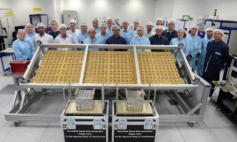
|
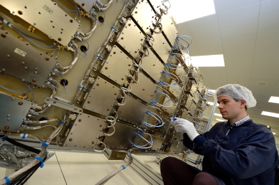
|
A highly flexible mode design capability has been created for NovaSAR, enabling a wide range of imaging modes to be implemented. Modes already implemented are as follows:
| Mode Name | Spatial Resolution | Swath Width / No of swaths | Polarisation | No. of Looks | Incidence Angle Range | Spacecraft Roll Angle |
|---|---|---|---|---|---|---|
| 6m_Stripmap_Near | 6m | 20km 9 swaths |
Single HH or VV | 3 (Az) | 16.0-25.38° | 20° |
| 6m_Stripmap_Mid | 14-20km 11 swaths |
21.29-31.2° | 26° | |||
| 20m_1Pol_ScanSAR_Near | 20m | 100km | Single HH or VV | 4 (2 Rg, 2 Az) | 15-28.9° | 20° |
| 20m_1Pol_ScanSAR_Mid | 50km | 11.3-32.0° | 26° | |||
| 30m_1Pol_ScanSAR_Near | 30m | 150km | Single HH or VV | 4 (2 Rg, 2 Az) | 11.29-25.93° | 20° |
| 30m_1Pol_ScanSAR_Mid_A | 55.43km | 25.0-29.94° | 26° | |||
| 30m_1Pol_ScanSAR_Mid_B | 55.18km | 27.35-32.01° | ||||
| Maritime_A (Azimuth ambiguous mode for ship detection in open ocean only) |
13.69m (Az) 6m (Rg) |
400km | Single HH | 1 | 34.49-57.26° | 45° |
| 20m_2Pol_ScanSAR_Near_A | 20m | 50km | Dual HH and VV | 4 (2 Rg, 2 Az) | 15.0-19.96° | 20° |
| 20m_2Pol_ScanSAR_Near_B | 19.76-24.48° | |||||
| 30m_3Pol_ScanSAR_Near | 30m | 50km | Dual HH and VV | 2 Az | 15.0-20.56° | 20° |
All these modes can image to the left or right side of the Nadir. Sensitivity, Ambiguity Ratio performance and data rates based on 4-bit BAQ compression are provided separately below in graphical form.
| 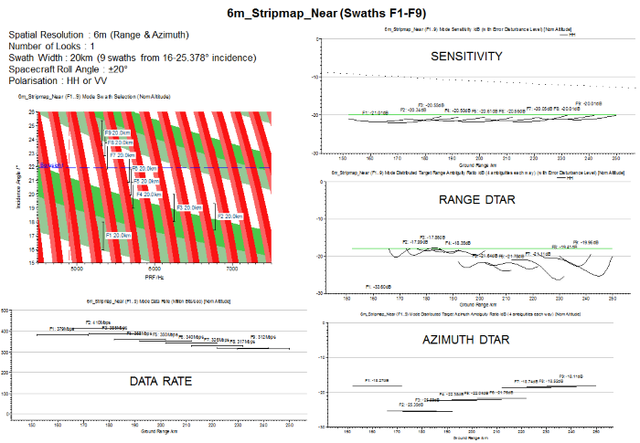 |
| 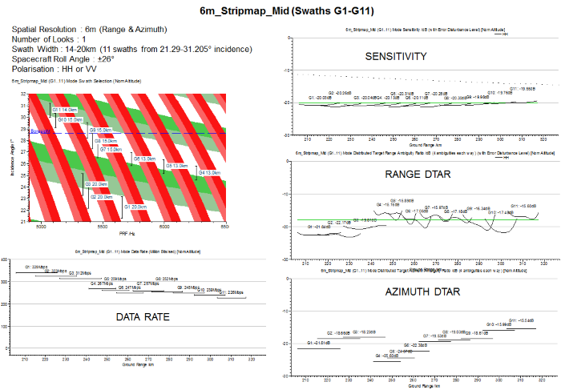 |
| 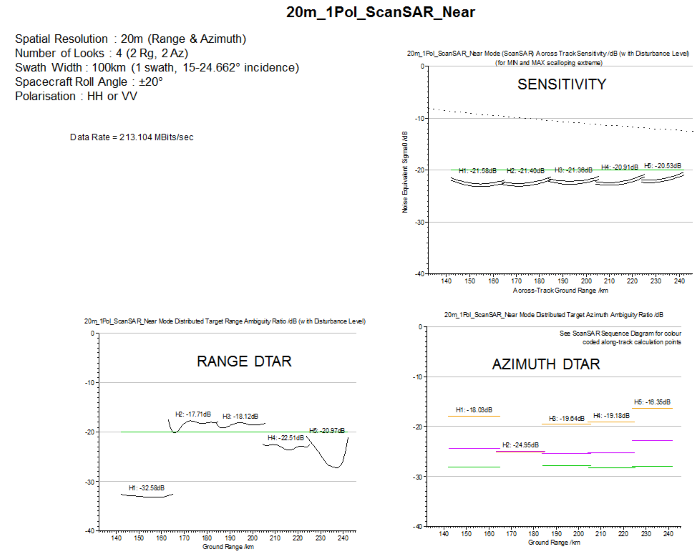 |
| 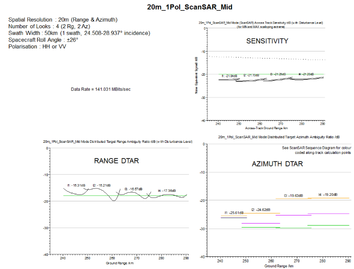 |
| 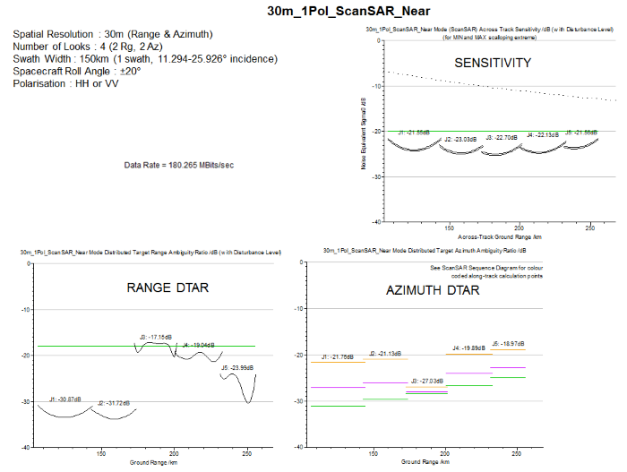 |
| 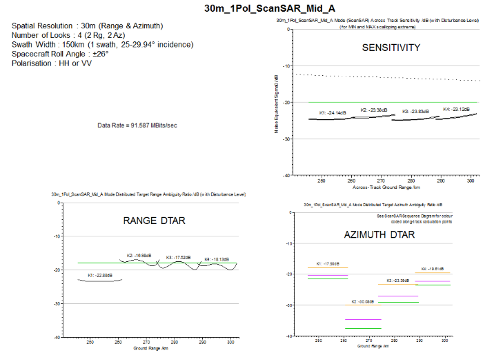 |
| 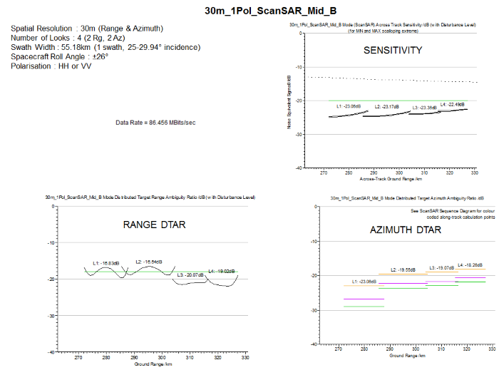 |
| 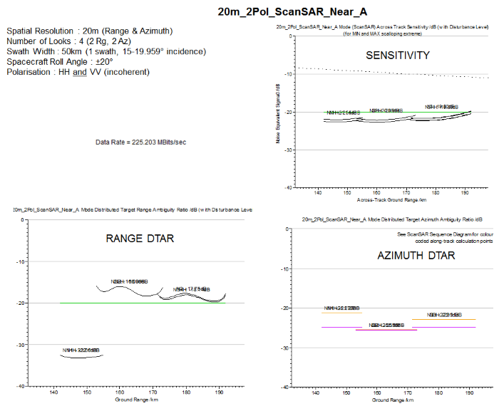 |
| 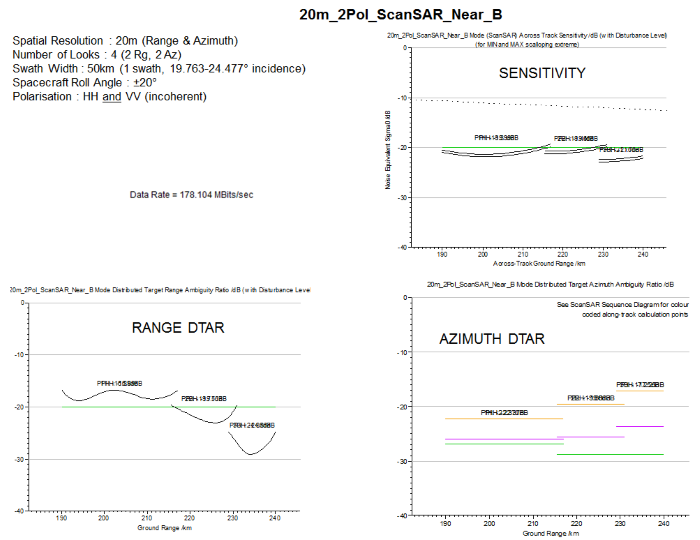 |
| 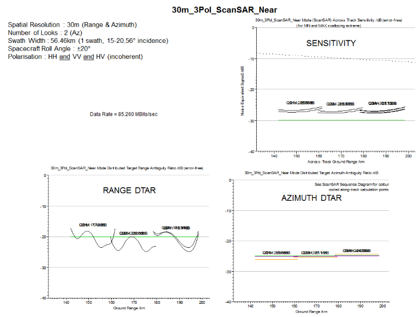 |
Further information about NovaSAR can be found at:
Note that mode information in this document supersedes data presented in the above eoportal
website.
Martin Cohen
SAR Payload Technical Lead & Engineering Manager
Airbus Defence & Space, Portsmouth, UK
martin.cohen@airbus.com
Phil Whittaker
SAR Payloads Manager
Surrey Satellite Technology Ltd (SSTL), Guildford, UK
p.whittaker@sstl.co.uk